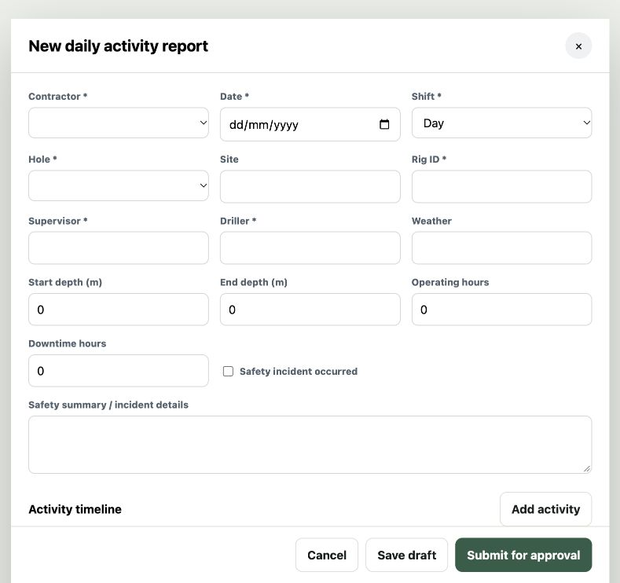

Record the shift.
Capture the rig, hole, depths, activity timeline, crew and consumables. Save a draft or submit the report when it is ready.
DrillOps / EOS
Bring drilling activity reports and production information into a clearer operational picture.
Discuss EOS ↗Already a customer? Sign in to EOS ↗
THE WORKFLOW
A daily report explains more than the metres drilled. Keep the hours, crew, consumables and delays available when the work is reviewed.
Capture the rig, hole, depths, activity timeline, crew and consumables. Save a draft or submit the report when it is ready.
Approve a report, raise a query or reject it with a reason. Keep the review history with the work it describes.
Inspect the recorded quantities and time against contract rates. Follow the detail from the report into the charge breakdown.
EOS / IN PRACTICE
Record the work as it happened.
Capture the rig and hole, start and end depths, crew, time on activities, consumables and the interruptions that affected the shift. Keep those records together so a reviewer can understand how the reported result was achieved.
Crews can prepare a draft before submitting the report. Reviewers can approve it, raise a query or reject it with a reason. The review belongs with the report, giving the next person the context needed to follow up.
Use the report register and calendar to locate the relevant rig and day. Move from a period overview back into the daily records when a number or an interruption needs explaining.
Review the period, then follow the evidence.
Review recorded production and time usage for a selected period. Separate the drilling result from the hours and activity categories behind it, then inspect individual reports where more explanation is needed.
Review the completed-hole records alongside the production report. Use the recorded evidence to understand what was completed during the period and how that relates to the selected program.
Inspect quantities and time against the contract rate records. Follow a charge back to the activity, crew or consumable record that supports it. The operational charge view remains distinct from the actual supplier invoices held in Account.
IN THE WORKSPACE
Find daily shift records and prepare reports for a selected period, project and contractor.
Keep review notes alongside the report so the crew can see what needs attention.
Review recorded metres, operating hours and time usage for your selected program.
Maintain the rate library and contracts used to understand charges for the work completed.
QUESTIONS
Crews preparing drilling reports, clients reviewing submitted work, and operations teams examining production, time and charges.
No. EOS explains recorded work and its associated charges. Account holds invoice and credit records, purchasing information and financial review tools.
Sign in with the account supplied by your organisation. The clients, projects and operational records available to you depend on that account’s permissions.
EOS
Sign in with the account provided by your organisation.